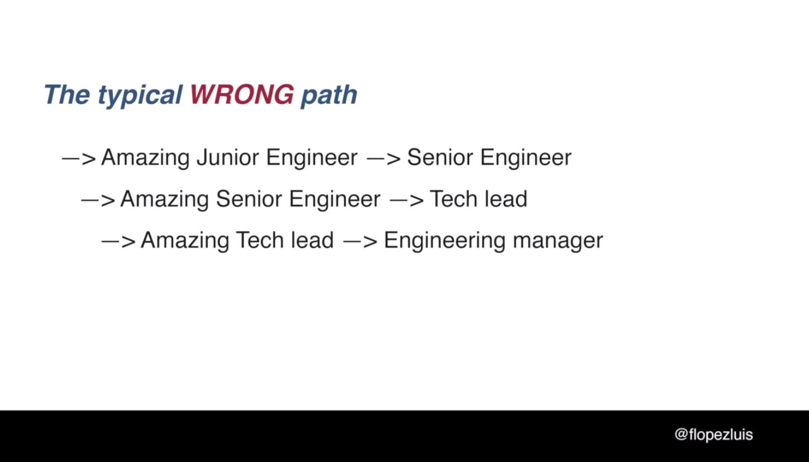
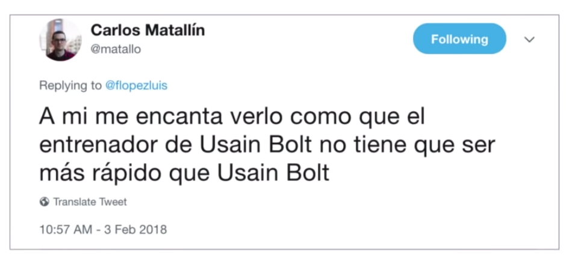
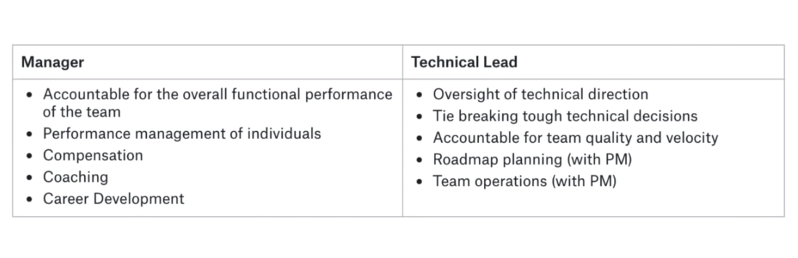

Engineering Manager vs Tech Lead
Engineering Manager vs Tech Lead

Engineering Manager vs Tech Lead
Para empezar con la serie de charlas sobre leadership and management, quería comenzar con un video de Félix López de la Commit Conf del 2018, que tuve la suerte de ver en directo. En esta charla Félix nos cuenta las diferencias que hay entre un Egineering Manager y un Tech Lead y nos presenta de forma divertida diferentes tipos de managers tóxicos, así como una serie de herramientas que como managers nos pueden ser muy útiles para evitar vernos reflejados en alguno de los tipos de manager que Félix nos relata en la charla.
“Engineering Manager vs Tech Lead” - Félix López

¿Qué es ser un manager?
Creo que es un acierto por parte de Félix comenzar la charla haciendo hincapié en que no hay una definición standard de lo que es ser un manager y ésta puede diferir mucho de una empresa a otra. El contexto, tamaño y madurez de la empresa, pueden ser determinantes a la hora de encontrar una definición.
Por lo tanto ser Engineering Manager puede significar cosas diferente dependiendo de la empresa en la que trabajes. Lo que es independiente de la empresa y aplica a cualquier definición, es que un rol de gestión requiere de unos skills concretos en los que hay que formarse. Hay gente que tiene un mayor predisposición natural para este tipo de roles, pero como todo en esta vida se puede aprender si le dedicamos tiempo y cariño.
Actualmente podemos ver dos tendencias en la industria en cuanto a lo que significa ser un manager:
El manager que se dedica casi en exclusiva a la gestión de personas y en ocasiones a la evaluación del desempeño.
El manager que es a la vez el tech lead del equipo, aunque el rol entendio de esta manera solo escala hasta un determinado punto. Cuando crece el número de personas a su cargo tiene que tomar una decisión de que quiere hacer, por que todo no lo podrá hacer bien.
Uno de las partes más divertidas de la charla es cuando Félix introduce diferentes versiones de managers tóxicos que nos podemos encontrar en cualquier empresa y cual sería el contra-ejemplo:
“No me cuentes tus problemas”
- Es aquél manager al que no le interesan los problemas de los demás y menos si éstos son personales. Suelen pensar que el problema es el equipo y por lo general no se dan cuenta de que el problema son ellos mismos.
El contra-ejemplo:
- Uno de los trabajos más importantes de un buen manager es saber escuchar, escuchar con el objetivo de poder anticipar conflictos, resolver problemas y mejorar la confianza con su equipo.
- Así mismo un buen manager tiene que ser un buen observador, capaz de ver como lo esta haciendo su equipo para poder corregir posibles problemas, capaz de identificar cambios de actitud en el equipo y actuar a tiempo.
- Para que el equipo entienda que el trabajo de un manager es cuidar del equipo, es vital mostrarse siempre disponible, que el equipo entienda que la prioridad como manager es su propio equipo.
Herramientas:
One-On-One: Como managers es una de las mejores herramientas que tenemos a nuestro alcance para mejorar la confianza con la gente del equipo, recibir y dar feedback, motivar y dar apoyo a cada miembro del equipo.
Algunos links para profundizar más sobre el tema:
“El ausente”
El ausente, es uno de los managers que nos encontramos con mayor frecuencia hoy en día en las empresas, sería aquel manager que nunca esta cuando se le necesita, aquel manager que no tiene tiempo para su equipo. Es común que se salte los One-On-One como norma.
Es ocasiones esto viene motivado por una falta de claridad o ausencia en la definición del rol y las tareas a realizar. Siendo honesto éste es el tipo de manager en el que más veces me he visto reflejado. En mi camnino desde desarrollador hasta manager he pasado por mucho estados de indefinición que me han hecho caer en este tipo de manager.
Uno de los skills que en mi caso más me han ayudado a corregir este tipo de comportamientos, ha sido tener conciencia de uno mismo, conocido como self awareness, para poder ir corrigiendo.
Os dejo un link si quereis profundizar un poco más sobre este importante skill.
Es muy importante para evitar este problema, que las empresas trabajen en la definición del rol y las tareas que conlleva dicho rol.
El contra-ejemplo:
Félix comenta en la charla que un manager debe guiar, liderar. Es crítico como manager entender que tu tiempo te deja de pertenecer, tú tiempo pasa a pertenecer a tu equipo.
Liderar, guiar se traduce en la mayoría de los casos en hacer las preguntas correctas para guiar la respuestas, dejando que el equipo encuentre su propio camino. Un buen manager tiene que ser un mejor coach.
Herramientas:
Una de la herramientas más valiosas de un manager es: dar feedback
Como Félix aclara en su charla, el feedback simpre deberá ser constructivo, en caso contrario será una crítica y como managers tenemos que evitar siempre caer en este tipo de situaciones.
Más adelante Félix introduce un framework sobre como estructurar la conversación a la hora de dar feedback. Luego comentaremos más detalles sobre el framework en cuestión. De momento os dejo algún Link con consejos sobre como dar un mejor feedback:
Os dejo otro link, que me ha pasado Félix que merece mucho la pena echarle una lectura:
“Pues lo que hay”
Básicamente este viene a ser el manager que si te escucha, pero no le importa nada lo que le estás diciendo.
El contra-ejemplo:
“A Manage’s job involves making it easy for her employees to get things done by creating fertile enviroments in which work can happen” - Camille Fournier
El trabajo del manager es allanar el camino a la gente de su equipo, de manera que se puedan centrar en hacer su trabajo. Para ello es muy importante que un manager entienda que es lo que esta haciendo su equipo, que entienda que estan haciendo otros equipos… es importante para un manager extender su área de influencia, observar y estar al tanto de oportunidades que puedan surgir en la empresa en las que pueda encajar alguien de su equipo. Un buen manager siempre pondrá por delante la felicidad y el éxito de un miembro de su equipo, aunque eso suponga dejarle ir a otro equipo para que persiga una nueva oportunidad.
Herramientas:
Una de las herramientas que comenta Félix que usan en Google, y que me parece una gran idea son los Ninja Lunch. Básicamete consiste en salir a comer con alguien ramdon dentro de la empresa, de modo que te ayude a conocer a gente nueva, estar al tanto de nuevas oportunidades para el equipo y ayudar a que como manager crezca nuestra área de influencia en la compañía.
“Por mi cojones”
Es aquel manager que cuya manera de motivar es por medio del miedo. Tienen un concepto del liderazgo muy mal entendido.
Managers are not the deciders - David Marquet
El contra-ejemplo:
El trabajo de un manager tiene que ser crear entornos creativos, entornos con autonomía y ownership, entornos donde se fomente la toma de decisiones en lugar de dirigir. Potenciar el “bottom-up” frente al “top-down”. El sistema tradicional de liderazgo (“top-down”) crea followers, gente que no se cuestiona las decisiones. Es importante para la empresa que su gente tenga mucho espiritu crítico y un foco claro.
Félix hace referencia en la charla a un libro de David Marquet, cuya lectura al igual que hace Félix en su charla la recomiendo a todo manager:
Os dejo también un enlace a una charla muy recomendable del mismo David Marquet:
Herramientas:

David creó un sistema para trasformar a la gente de followers a líderes.
Como líderes, tenemos que tener muy presente los niveles de control, competencia y claridad del equipo de modo que podamos ayudarles de manera eficiente dependiendo en que nivel se ecuentre cada uno.
Os dejo por aquí el link al post del cual está sacada la imagen, donde se profundiza más en el concepto:
En un momento de la charla Félix comenta que uno de los valores de una de las empresas por las que ha pasado era: start with Why. No se si está relacionado con el libro de Simon Sinek, pero os dejo el link por que para mí es un libro recomendadísimo, que me gusto mucho cuando lo leí:
Herramientas básicas de un manager
One-to-One
- No es un reunión de trabajo, no debe usarse para ver el estado del proyecto.
- Es una oportunidad para crear un vínculo con la persona del equipo, para mejorar la confianza.
- Una de las formas de mejorar la confianza es mostrando preocupación.
Os dejo por aquí algún enlace, con consejos para preparar vuestro primer 121:
Framework de Competencias (Ladder)
Podríamos decir que se trata de una descripción de las tareas y skills para cada rol dentro de la empresa. Es una herramienta para crear estructura y claridad en el proceso de promoción de una empresa.
Os dejo algunos links con ladders públicos de alguna empresa que me han resultado interesantes:
- Rent the runway Engineering Ladder, creado por Camile Fournier
- Glossier Engineering Ladder
- Kickstarter Engineering Ladder
Career Conversations
Una de la formas de saber si estas haciendo bien tu trabajo como manager es ver que la gente de tu equipo esta creciendo y se está desarrollando. Carrer conversations, te ayuda como manager a entender los objetivos de desarrollo personal que persigue la gente de tu equipo y te ayuda a articular los pasos necesarios para poder ayudarles a alcanzarlos.
Os dejo por aquí algún link sobre el tema:
Performance Review
El performance review, básicamente consiste en una conversación formal para evaluar el desempeño de las personas que tenemos como parte del equipo, identificando las fortalezas y debilidades de cada persona. Es un buen momento para ofrecer feedback y establecer objetivos futuros.
Una de las cosas que comenta Félix y que para mí es crítica es que un buen manager nunca tiene sorpresas en el performance review. Todavía es muy común hoy en día ver empresas en las que el performance review consiste en un conversación al final del año, y es en estos casos donde como managers nos podemos llevar muchas sorpresas. De ahí que en mi caso le doy mucha importancia a realizar evaluación continua.
Links relacionados con el performance review:
- The Performace Review
- The DOs and DON’Ts of Performance Reviews
- The Annual Review Process is Broken. Here’s How You Can Fix it
- 7 important considerations when redesigning your performance reviews
Manager’s Tools:
S.B.I. Feedback Model
S.B.I. - Situation-Behavior-Impact Model
Es una estupenda herramienta que nos ayuda a estructurar nuestro pensamiento y la conversación a la hora de dar feedback. Esta demostrado que S.B.I. ayuda a reducir la ansidad a la hora del dar el feedback y ayuda a posicionar a la persona que lo recibe de forma menos defensiva.
Link con más detalles sobre SBI:
Una variación del modelo anterior es SBI-BI, donde se ofrece un comportamiento alternativo, junto con el impacto que se espera del nuevo comportamiento.
GROW
Herramienta esencial para coaching. Ayuda a estructurar la conversación.
Importante comentar en este punto que el objetivo de el coaching no es enseñar, sino hacer las preguntas adecuadas para que la persona se “enseñe” así mismo.

Competence Ladder

Es vital entender en que estado de conocimiento se encuentra la otra persona, ya que dependiendo de en que escalón se encuentre requerirá diferente tipo de ayuda.
Tech Lead

No puedo estar más de acuerdo con Félix en la representación del Tech Lead WRONG Path. Esto me recuerda el principio de Peter, que tanto se repite en la empresa tradicional. Para aquellos que no os suene os dejo un link a la Wikipedia:
Félix comenta que ser Tech lead, no tiene nada que ver con ser técnico. No tiene que ver con ser el que más sabe de algo.
“A tech lead is not a person who can do the work better than her team; she is a person who can get her team to do the work better than she can”

SORPRESA!
Un tech lead es también un project manager - Félix López
Un Tech lead tiene que estar centrado en el delivery, ser tech lead es un trabajo muy exigente:
- Tienes que estar al día de temas técnicos.
- Tienes que hablar con stakeholder - saber comunicar.
- Tienes que saber planificar un proyecto.
- Tienes que conocer en profuncidad el negocio.
- No es siempre un puesto suficientemente valorado.
La comunicación es una de sus mejores skills, una persona introvertida necesitará que se le ayude.
A key skill in TL is the ability tio measure tradeoffs between cost and benefsits e.g. when a shortcut/Technical debt is the right decision. - Camille Fournier
Principales habilidades de un tech lead
- Soft skills.
- Project management.
- Technical person.
- Keep the dream alive.
- Leadership.
Para acabar Félix nos presenta 3 roles tóxicos relacionados con el liderazgo, que podrían aplicar tanto a Tech leads como a Engineering managers.
“The special one”
El Mouriño de los de los managers 😂.
Para un manager es muy importante reconocer que su equipo es awesome. Como managers tenemos que reconocer cuando no sabemos algo, éste es el primer paso para aprender algo nuevo. Dando ejemplo podemos ayudar al resto del equipo a crecer.
“Pues se tiene que poder”
Es muy importante como líder aprender a decir que NO, es crítico aprender como y cuando decir NO En mi caso y siendo honesto es todavía una tarea pendiente en la que estoy trabajando.
Félix comenta en la charla sobre el Triángulo de Oro o Triángulo de hierro, os dejo un link para profundizar más en el tema y el enlace al video al que hace referencia en la charla (gracias Félix por link):
Scrum con Medinilla y el “¡pos’ se tiene que poder!”

“Rey/Reina del micromanagement”
Unas de sus grandes virtudes es pasar marrones a sus compañeros.
Una de las tareas más importante de un buen manager es generar confianza, pero a su vez tener confianza en el propio equipo, empoderar al equipo. Hay que dejar que la gente del equipo pueda tomar sus propias decisiones y pueda equivocarse, es tarea del manager que el impacto del error no sea muy grande. En muchas empresas con un entorno de trabajo sano se “premia” el error, ya que está demostrado que es una de la mejoras formas de apredizaje.
Diferencias Manager vs Tech Lead

Para acabar la charla con un gran consejo de Félix:
Don’t fool yourself
No es humanamente posible ser desarrollador, tech lead y manager a la vez, si lo intentamos es cuando empezaremos a ver reflejado en nuestro estilo de liderazgo alguno de los rasgos de los manager tóxicos que nos comentaba Félix en su charla.
Si has llegado hasta aquí, muchas gracias por leerme…